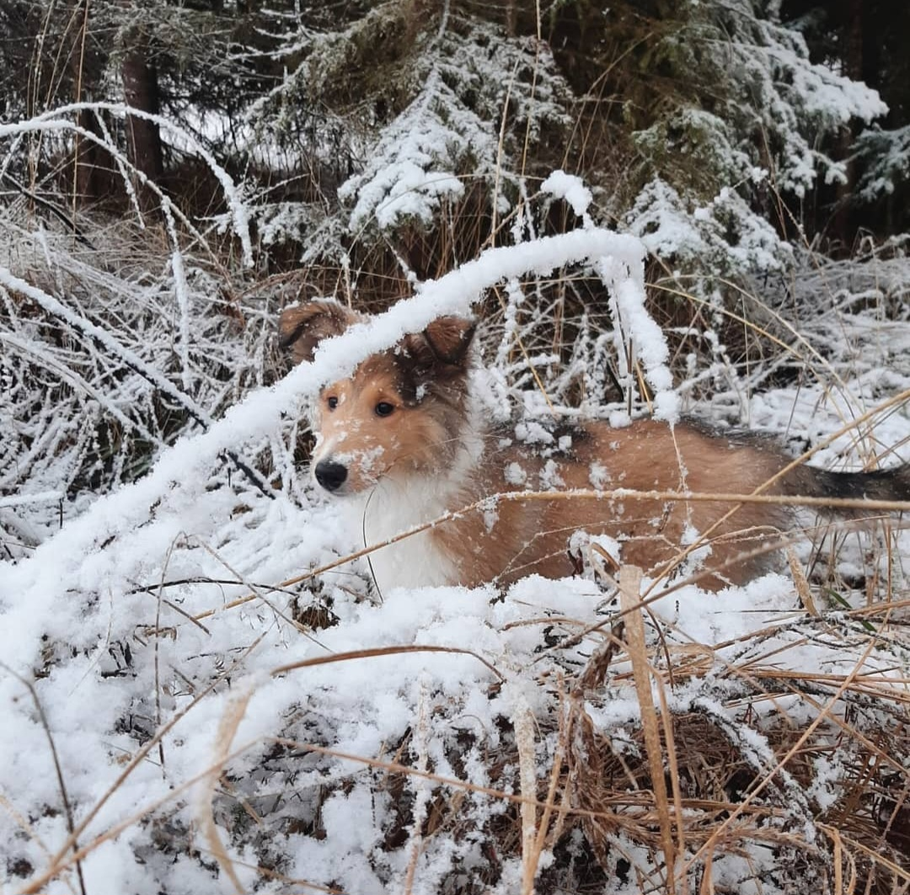
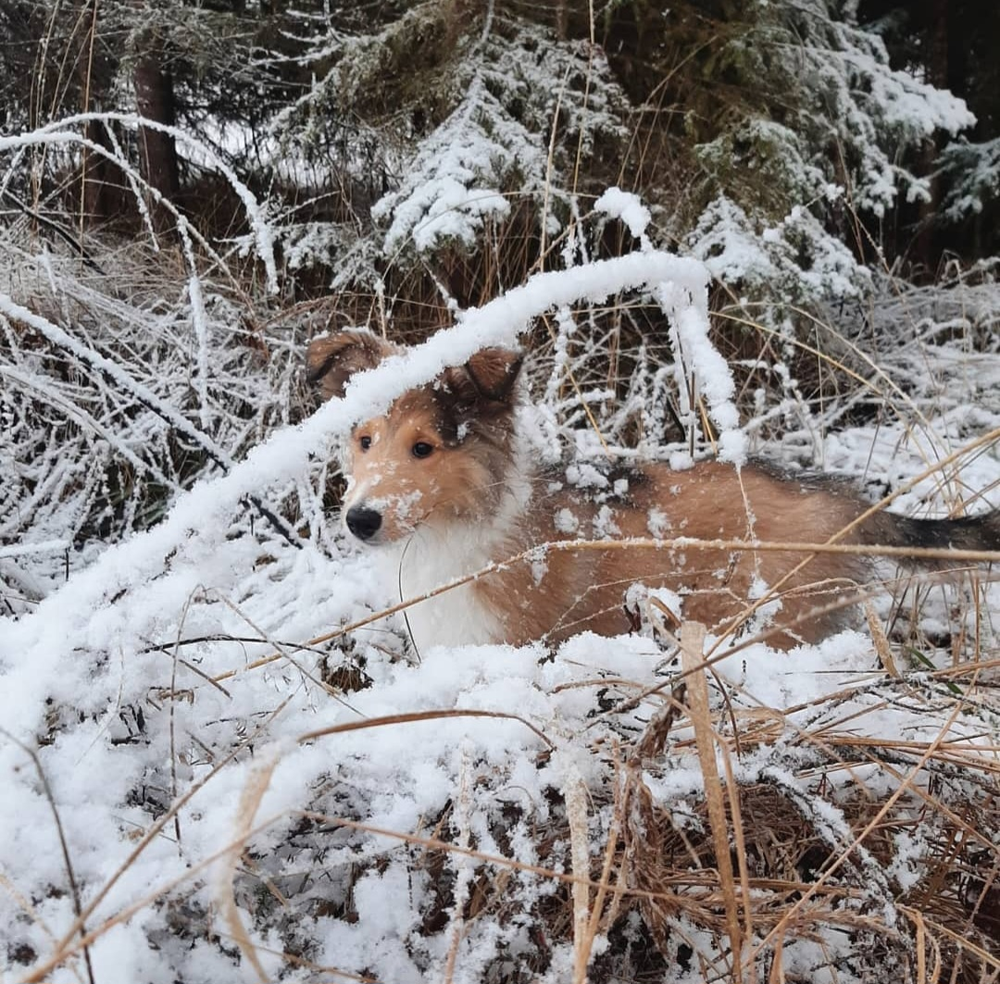

Hi! I’m Laura
A curious mind with a love for web development
I'm passionate about all things technology-related and constantly seek to expand my knowledge and skills. Whether it's exploring new programming languages, diving into web development, or experimenting with innovative tools, I thrive on learning and growing in this ever-evolving field.


 
